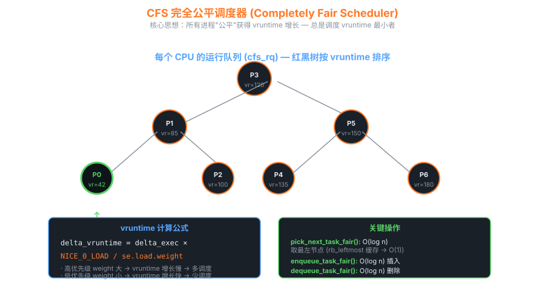

10CFS 完全公平调度器深入
CFS (Completely Fair Scheduler) 由 Ingo Molnar 在 2.6.23 引入，取代了 O(1) 调度器，至今仍是 Linux 默认调度器。本章逐层揭开它的"公平"如何实现。
10.1 核心思想 — 公平 = 等比例 CPU 时间
CFS 一句话原理
设想一个"理想的多任务 CPU"，能同时运行所有进程，每个进程得到 1/n 的 CPU。
CFS 用 vruntime 模拟这个理想：每个进程的 vruntime 应该完全相等，
谁的 vruntime 最小，就调度谁。
10.2 vruntime 是什么

CFS 红黑树按 vruntime 排序，每次取最左节点
/* kernel/sched/fair.c */ struct sched_entity { struct load_weight load; // 由 nice 值决定 struct rb_node run_node; // 红黑树节点 u64 exec_start; // 上次开始运行的时刻 u64 sum_exec_runtime; // 累计实际运行时间 u64 vruntime; // ★ 虚拟运行时间 u64 prev_sum_exec_runtime; struct cfs_rq *cfs_rq; }; /* 每次 tick (1ms) 更新 vruntime */ static void update_curr(struct cfs_rq *cfs_rq) { struct sched_entity *curr = cfs_rq->curr; u64 now = rq_clock_task(rq_of(cfs_rq)); u64 delta_exec = now - curr->exec_start; curr->exec_start = now; curr->sum_exec_runtime += delta_exec; // 关键公式! curr->vruntime += calc_delta_fair(delta_exec, curr); update_min_vruntime(cfs_rq); } /* calc_delta_fair: 实际时间 → 虚拟时间 */ static inline u64 calc_delta_fair(u64 delta, struct sched_entity *se) { if (unlikely(se->load.weight != NICE_0_LOAD)) delta = __calc_delta(delta, NICE_0_LOAD, &se->load); return delta; }
公式直观理解
delta_vruntime = delta_real × (NICE_0_LOAD / weight)
- nice = 0 → weight = 1024 (NICE_0_LOAD)，实时间 = 虚时间
- nice = -5 → weight = 3121，虚时间增长慢 → 多被选中 (高优先级)
- nice = +5 → weight = 335，虚时间增长快 → 少被选中 (低优先级)
nice 每差 1，CPU 份额比例约为 1.25:1（标准定义）。
10.3 红黑树 — 为什么用它
| 数据结构 | 插入 | 删除 | 取最小 | 结论 |
|---|---|---|---|---|
| 链表 | O(1) 或 O(n) | O(1) 或 O(n) | O(n) | 太慢 |
| 最小堆 | O(log n) | O(log n) | O(1) | 但更新 vruntime 不便 |
| 红黑树 | O(log n) | O(log n) | O(1) (缓存 leftmost) | 赢家 |
/* CFS 每个 CPU 一个 cfs_rq */ struct cfs_rq { struct load_weight load; unsigned int nr_running; u64 min_vruntime; // 队列里最小 vruntime, 用于新进程初始化 struct rb_root_cached tasks_timeline; // 红黑树 + leftmost 缓存 struct sched_entity *curr; }; /* pick_next_task_fair — 选下一个 */ struct task_struct *pick_next_task_fair(struct rq *rq, ...) { struct cfs_rq *cfs_rq = &rq->cfs; struct sched_entity *se; // 取红黑树最左节点 — O(1)! se = pick_next_entity(cfs_rq, NULL); return task_of(se); }
10.4 调度类 — CFS 不是全部
10.5 负载均衡
SMP 系统每核一个 runqueue，CFS 周期性把"忙核"的任务迁到"闲核"：
# 调度域层级 (NUMA + SMT 系统) sys/kernel/debug/sched/domains/ └── cpu0/ ├── domain0/ # SMT (兄弟核) — 几乎免费迁 │ ├── name: SMT │ └── flags: SD_SHARE_CPUCAPACITY ... ├── domain1/ # MC (同 LLC/L3) — 便宜 │ ├── name: MC │ └── flags: SD_SHARE_PKG_RESOURCES ... └── domain2/ # NUMA — 昂贵, 慎迁 ├── name: NUMA └── flags: SD_NUMA ...
每个 tick 检查是否需要均衡，按调度域从小到大逐层尝试。同一 socket 内的迁移几乎免费（L3 命中），跨 NUMA 迁移成本极高。
10.6 CFS + cgroup 层次调度
容器场景下，每个 cgroup 是一个 sched_entity，它内部又有自己的 cfs_rq 包含子任务/子 cgroup。 "公平"于是变成"cgroup 间公平 → cgroup 内任务间公平"的两层结构。
# cgroup v2 配置 cpu.weight (默认 100, 范围 1~10000) echo 200 > /sys/fs/cgroup/my_app/cpu.weight # 翻倍权重 echo 50 > /sys/fs/cgroup/junk/cpu.weight # 半倍权重 # cpu.max — 硬上限 (类似 nice -20 但更可控) echo "50000 100000" > /sys/fs/cgroup/my_app/cpu.max # 50%
10.7 EAS — 能效感知调度 (移动场景)
big.LITTLE / DynamIQ ARM 芯片有"大核"和"小核"，性能-功耗特性不同。 EAS (Energy Aware Scheduling) 在 5.x 内核引入，调度时计算每核的能效模型，把任务放在能量最低且满足性能的核上：
cat /sys/devices/system/cpu/cpu0/cpu_capacity # 大核可能 1024 cat /sys/devices/system/cpu/cpu4/cpu_capacity # 小核可能 446 cat /sys/kernel/debug/sched/features # 看 EAS 是否开启
10.8 CFS 调试与可视化
# 实时查看每个 cfs_rq 状态 cat /proc/sched_debug # 用 ftrace 看调度事件 echo function_graph > /sys/kernel/debug/tracing/current_tracer echo pick_next_task_fair > /sys/kernel/debug/tracing/set_graph_function cat /sys/kernel/debug/tracing/trace_pipe # 用 perf 看上下文切换 perf sched record sleep 5 perf sched latency perf sched map # 可视化每核任务时间线 # BPF 工具 bpftrace -e 'tracepoint:sched:sched_switch { @[prev_comm, next_comm] = count(); }'